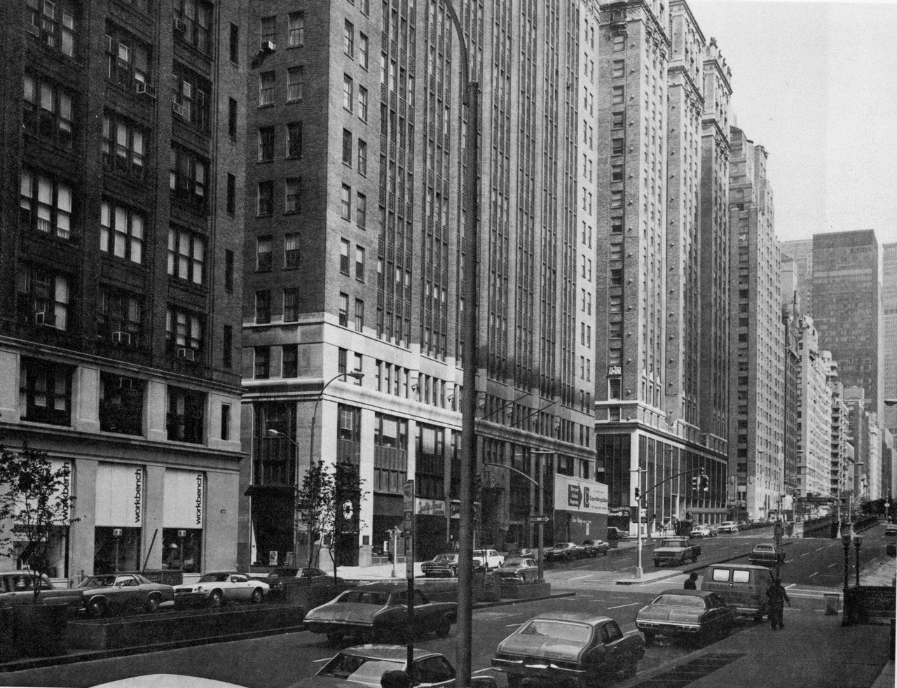
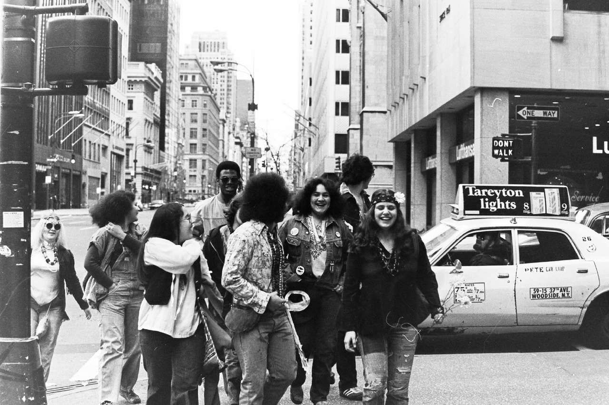
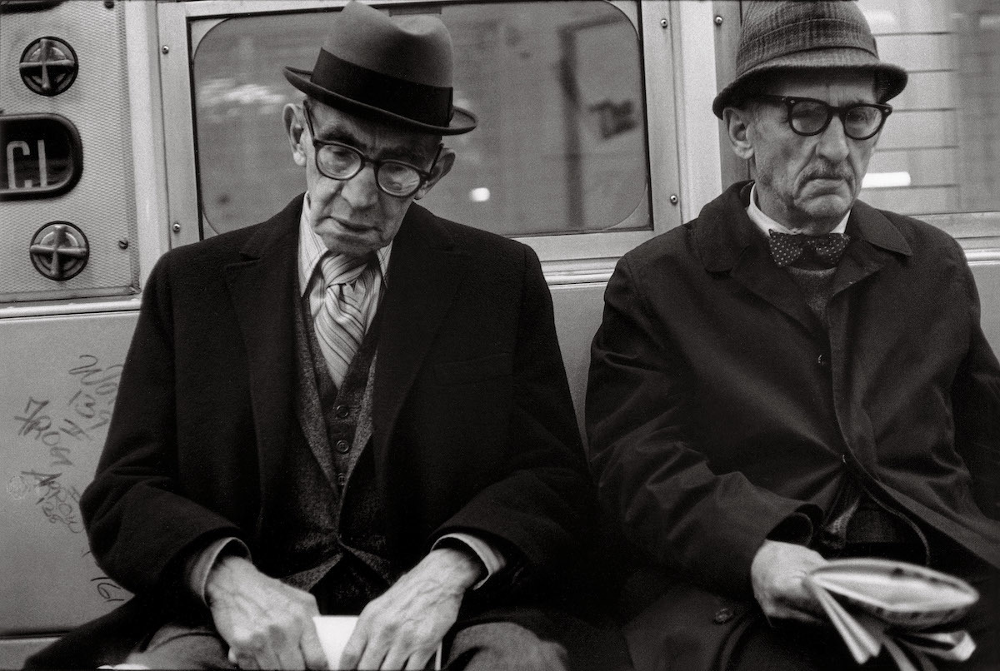
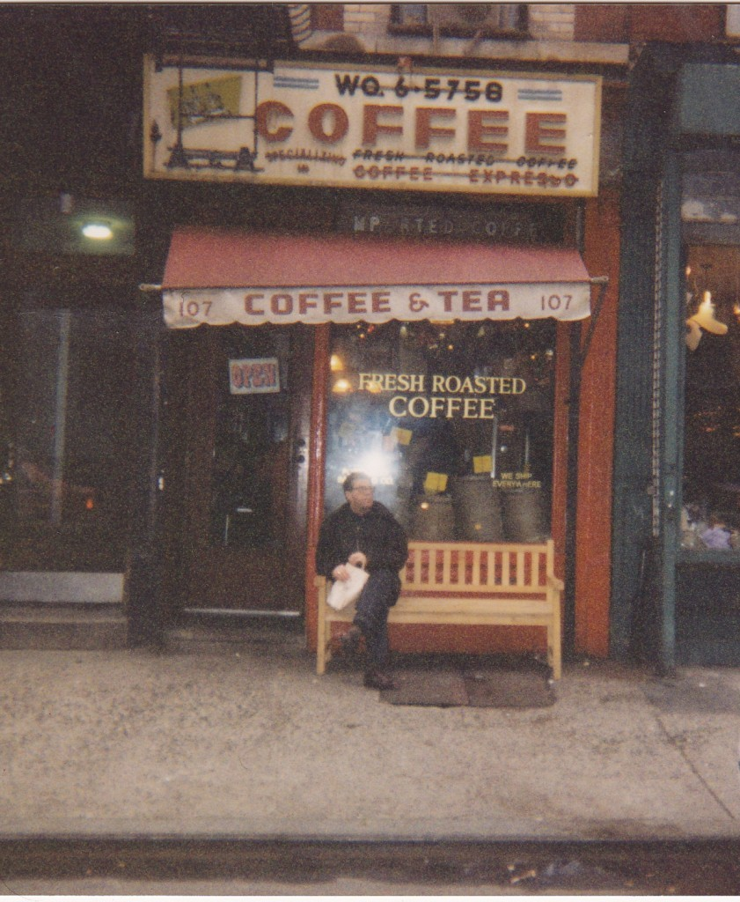
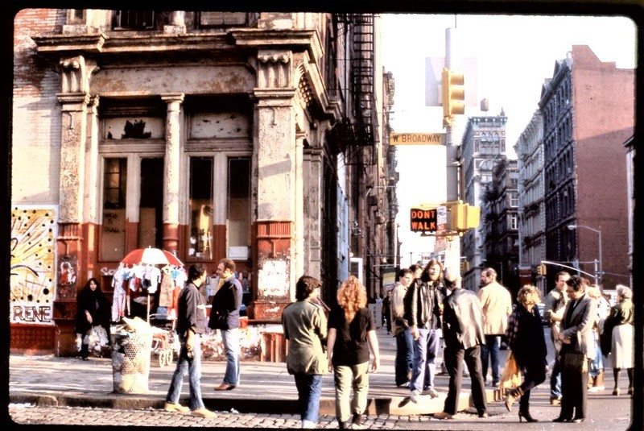

Cat Club, 1988, 13th Street.
Cat Club, 1988, 13th Street.

Willoughby Street, Brooklyn, 1972

Mott and Grand, Little Italy, 1974

Park Ave South at 31st St, 1974
West 8th Street, looking East from 6th Ave. 1977.
Sixth Ave, 1970s

Hippies on Fifth Ave, 1978

Mid-70s NYC bus

63rd Drive subway station, Queens, 1973

NYC skyline, 1973
The brand new World Trade Center, 1973

Her boom box is tiny, but it makes her very happy.
WTC 1973

Steve Martin on Fifth Ave, 1977
Terminal Bar, 41st Street and Eighth Avenue in Manhattan, circa 1975. Located essentially where midtown meets Hell’s Kitchen, the bar earned a reputation over its lifetime (1958-82) as a tough place with a wide range of customers. Presumably its name related to the nearby Port Authority Bus Terminal, itself a place that attracted its share of riffraff.Â
This photo is from a feature at flashbak.com about the bar featuring 1973-81 photos by its bartender Shelly Nadelman. A Gothamist article from 2014, A Look Back At Terminal Bar, One Of NYC’s Most Notorious Dives, talks more about the bar from the perspective of Shelly’s son Stefan who digitized his father’s photos and also produced a short film based on them in 2002. The 22-minute film is viewable at the Gothamist link.
Catching some Zs, West Village style
On the 7 train, with creepy dolls, 1984

Cops on a break, 1982
Talking to the voices in his head


Discreet Photos of NYC Subway Riders in the 1970s Show an Era Before Smartphones

The Captain and Tennille, 1980Â

Fighting on 5th Ave, 1983. Mom jeans always win.

East Village, 1980s

Glam shot in Alphabet City

life:
Olympic skater Carol Heiss performing at the Wollman Memorial Rink in Central Park, NYC. Heiss won a silver medal in the 1956 Olympics, a gold medal in the 1960 Olympics and is a five-time World Champion.(📷Ralph Morse/The LIFE Picture Collection/Getty Images) #LIFElegends #Olympics #CentralPark

Bleecker and Thompson, 1983. The Back Fence, Kenny’s Castaways, and Surf Maid.
Central Park, 1982
Hangin’ on Broadway, 1978
Grocery shop on Hester St, 1986
Early subway graffiti, 1973

Grand Central in the 1970s, when it was still okay to advertise cigarettes.

Times Square 1973
1st Ave and 61st St. Eastworld Cinema playing “Screwples”. Fine cinema.
Guggenheim Museum in 1982

The announcement of the Soldiers and Sailors’ Monument, 1902
Well, I’m a little skeptical that Tom’s is interesting enough to create a whole documentary about it, but apparently someone is doing it. I hope they include some images from the 70s, when it was dangerous to go there.
A short video about the playground at PS 166

Train at 145th Street, 1973
Times Square 1975

South Bronx, 1977
Grates over the train tunnels in Riverside Park. The smell coming up from the tracks is still in my brain, after decades.

Big Wilt’s Smalls Paradise, Adam Clayton Powell Jr. Blvd at 135th St.
Staten Island, the forgotten borough, in the 1980s.
Pink Pussycat Boutique, 1987
CBGB, 1984

W. Broadway at Broome St., 1980

E. 86th Street in 1986

King and MacDougal, 1981
2nd Ave and 61st St, 1980Â
Girl with white Dress (Harlem, 1985) - Geoffrey Hiller